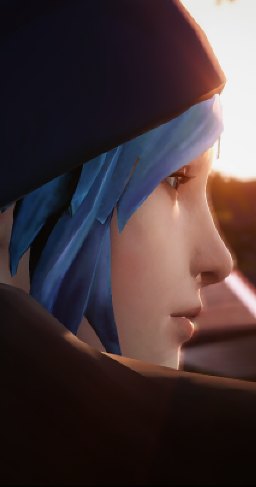
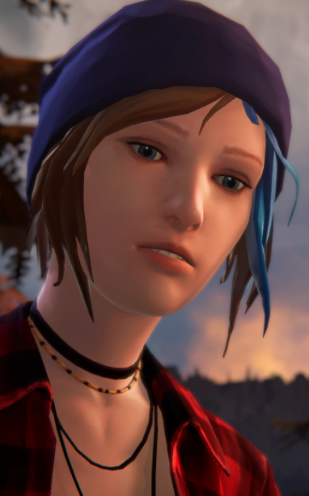

Chloe Price
The ButterflyChloe Elizabeth Price is the deuteragonist of Life is Strange. Chloe is a high school student at Blackwell Academy. She is the daughter of William Price and Joyce Price, and the step-daughter of David Madsen.
Nicknames: Queen of Assholes, Queen of the World, Faithful Companion, Captain Chloe.
Chloe is a stubborn, mischievous, and rebellious young woman. She is the archetypal punk-rocker, expressed in both her music taste and style. She loves to get high, drink beer, and can be described as bold and outgoing. She has a big mouth often making snarky comments, acts fearless and loves to take risks, which often gets her in trouble.
She can be prone to angry outbursts, and has serious issues with abandonment and trust after her father's death, Max's move to Seattle, and the disappearance of Rachel Amber. Due to all her bad experience over the years, she has become pessimistic and resentful of life, convinced that there wasn't really anyone who actually cared about her or who she could trust in.
"Everybody pretends to care until they don't."
- Full Name:
Chloe Elizabeth Price - Age: 27
- Born: March 11, 1994
- Hometown: Arcadia Bay, Oregon
- Gender: Female
- Height: 5'9" (1.75m)
Chloe has a punk aesthetic. She wears pale bluish-gray ripped jeans with braces/suspenders, black boots, and a white vest with either a skull, heart, or snake on it. She's always seen wearing a necklace that has three bullets hanging as pendants.
She has a tattoo sleeve on her right arm, an intricate design featuring flowers, butterflies, and a yellowed skull. Her dyed hair is mainly bright blue with teal highlights, with roots that fade out from pink to light purple. Her natural hair color, strawberry blond, is visible at the roots from new growth.